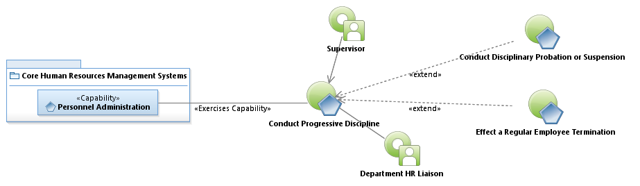
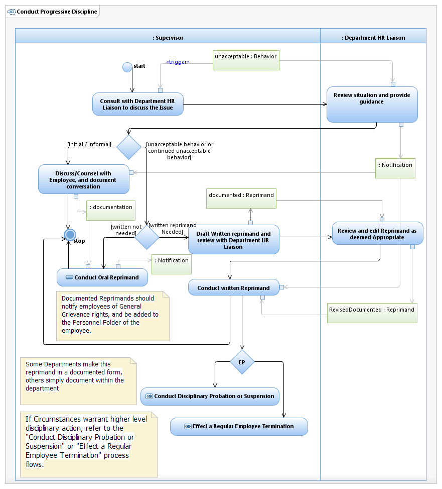

Use Case Model: Conduct Progressive Discipline
Architect: Aaron Brown, IT Enterprise Architect, Senior
Date Last Modified: 02/20/2013
User Review: Margery Reue, Jeff Burton
Date: 02/20/2013
Due to behavior or conduct and/ or a policy violation, disciplinary action is necessary. Based on the severity of the infraction, and disciplinary history of the employee, the actions may differ. This may include Verbal reprimand, Written reprimand, disciplinary probation, disciplinary suspension, and termination.
Follow link to Role Definitions

Use Case Model: Conduct Progressive Discipline

Activity Model: Conduct Progressive Discipline